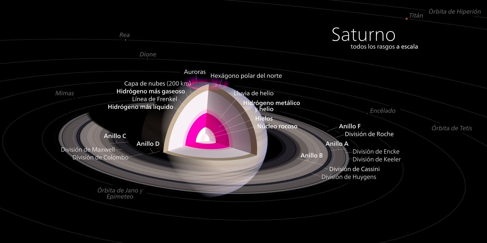
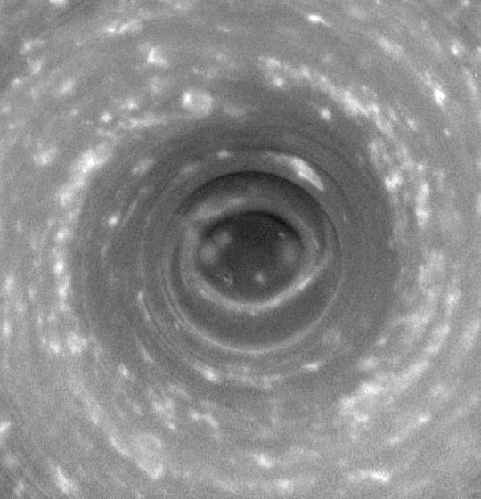

Saturno es el sexto planeta del sistema solar contando desde el Sol, el segundo en tamaño y masa después de Júpiter y el único con un sistema de anillos visible desde la Tierra. Su nombre proviene del dios romano Saturno. Forma parte de los denominados planetas exteriores o gaseosos. El aspecto más característico de Saturno son sus brillantes y grandes anillos. Antes de la invención del telescopio, Saturno era el más lejano de los planetas conocidos y, a simple vista, no parecía luminoso ni interesante.
El primero en observar los anillos fue Galileo en 1610,[1] pero la baja inclinación de los anillos y la baja resolución de su telescopio le hicieron pensar en un principio que se trataba de grandes satélites. Christiaan Huygens, con mejores medios de observación, pudo en 1659 observar con claridad los anillos. James Clerk Maxwell, en 1859, demostró matemáticamente que los anillos no podían ser un único objeto sólido sino que debían ser la agrupación de millones de partículas de menor tamaño.[2] Las partículas que componen los anillos de Saturno giran a una velocidad de 48 000 km/h, 15 veces más rápido que una bala.
Origen del nombre del planeta Saturno

Debido a su posición orbital más lejana que Júpiter, los antiguos romanos le otorgaron el nombre del padre de Júpiter al planeta Saturno. En la mitología romana, Saturno era el equivalente del antiguo titán griego Crono, hijo de Urano y Gea, que gobernaba el mundo de los dioses y los hombres devorando a sus hijos en cuanto nacían para que no lo destronaran. Zeus, uno de ellos, consiguió esquivar este destino y finalmente derrocó a su padre para convertirse en el dios supremo. En la Antigüedad clásica a Saturno se lo conocía como Faetonte o Faetón.
Los griegos y romanos, herederos de los sumerios en sus conocimientos del cielo, habían establecido en siete el número de astros que se movían en el firmamento: el Sol, la Luna, y los planetas Mercurio, Venus, Marte, Júpiter y Saturno, las estrellas «errantes» que, a distintas velocidades, orbitaban en torno a la Tierra, centro del universo. De los cinco planetas, Saturno es el de movimiento más lento, emplea unos treinta años (29.46 años) en completar su órbita, casi el triple que Júpiter (11.86 años) y respecto a Mercurio, Venus y Marte la diferencia es mucho mayor. Saturno destacaba por su lentitud y si Júpiter era Zeus, Saturno tenía que ser Crono, el padre anciano, que paso a paso deambula entre las estrellas.
Características generales

Saturno es un planeta visiblemente achatado en los polos con un ecuador que sobresale formando un esferoide ovalado.[4] Los diámetros ecuatorial y polar son de 120 536 y 108 728 km, respectivamente.[5] Este efecto es producido por la rápida rotación del planeta, su naturaleza fluida y su relativamente baja gravedad. Los otros planetas gigantes son también ovalados pero en menor medida.[6][7] Saturno posee una densidad específica de aproximadamente 690 kg/m³, siendo el único planeta del sistema solar con una densidad inferior a la del agua (1000 kg/m³).[4] La atmósfera del planeta está formado por un 96 % de hidrógeno y un 3 % de helio.[5] El volumen del planeta es suficiente como para contener 740 veces la Tierra, pero su masa es solo 95 veces la terrestre, a causa de la ya mencionada baja densidad media.[
El periodo de rotación de Saturno es incierto dado que no posee superficie y su atmósfera gira con un periodo distinto en cada latitud. Desde la época de los Voyager se consideraba que el periodo de rotación de Saturno, basándose en la periodicidad de señales de radio emitidas por él, era de 10 h 39 min 22.4 s (810.8°/día). Las misiones espaciales Ulysses y Cassini han mostrado que este periodo de emisión en radio varía en el tiempo, siendo en la actualidad de 10 h 45 min 45 s (± 36 s). La causa de este cambio en el periodo de rotación de radio podría estar relacionada con la actividad criovolcánica en forma de géiseres del satélite Encélado, que libera material en órbita de Saturno capaz de interactuar con el campo magnético externo del planeta, utilizado para medir la rotación del núcleo interno donde se genera. En general, se considera que el periodo de rotación interno del planeta puede ser conocido tan solo de forma aproximada.[
Los modelos planetarios típicos consideran que el interior del planeta es semejante al de Júpiter, con un núcleo rocoso rodeado por hidrógeno, helio y trazas de otras sustancias volátiles.[11] Sobre él se extiende una extensa capa de hidrógeno líquido, debido a los efectos de las elevadas presiones y temperaturas. Los 30 000 km exteriores del planeta están formados por una extensa atmósfera de hidrógeno y helio. El interior del planeta probablemente contenga un núcleo formado por materiales helados acumulados en la formación temprana del planeta y que se encuentran en estado líquido en las condiciones de presión y temperatura cercanas al núcleo. Este se encuentra a temperaturas en torno a 12 000 K —aproximadamente el doble de la temperatura de la superficie del Sol